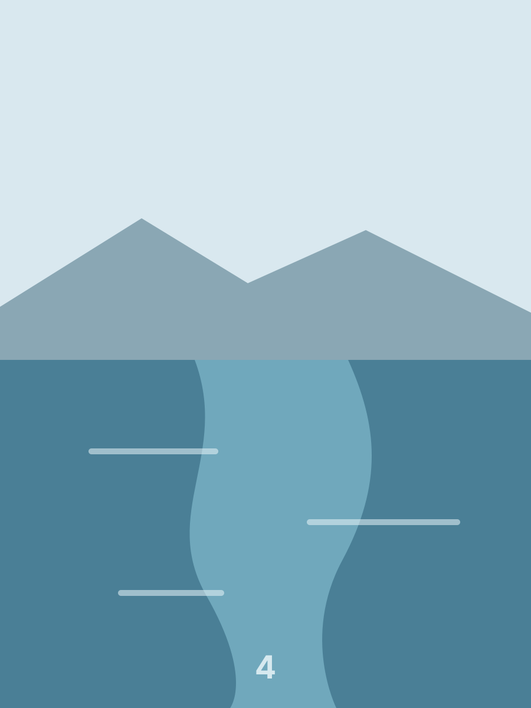
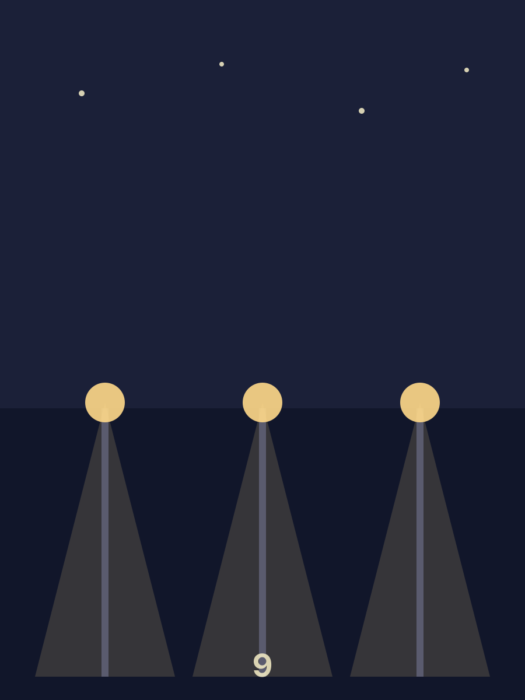

Twelve pages, six leaves
The thickness at the edge is the leaves underneath, offset a little each. Only the top few are drawn: past that there is nothing to see and something to pay for, so the rest are taken out of the page entirely.
Watch the pile move from one side to the other as you read: the right one thins, the left one grows, and where the book is up to is legible without a page number.








Quick, and unhurried
duration="220" and duration="1200". The number is how
long a whole turn takes; a leaf let go half way through takes half of it, because
the time is spent on the distance actually left.